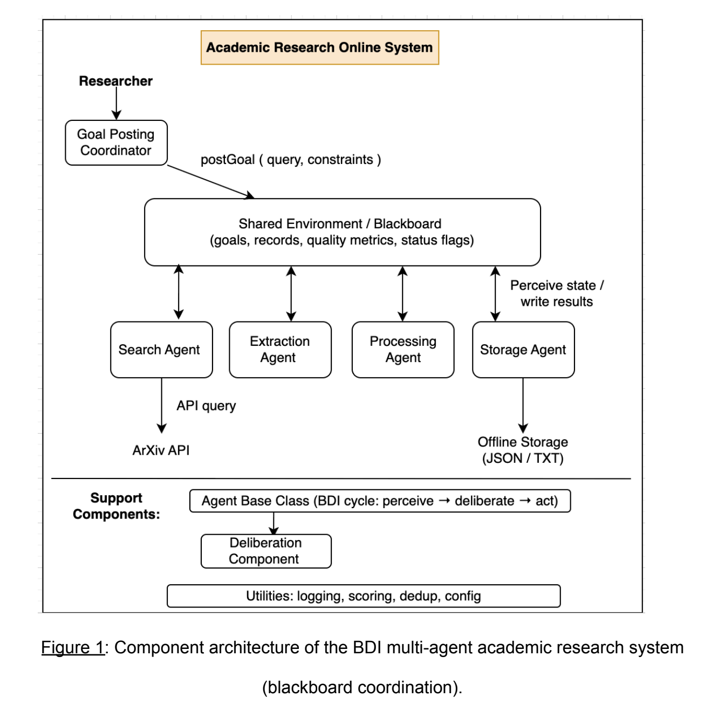
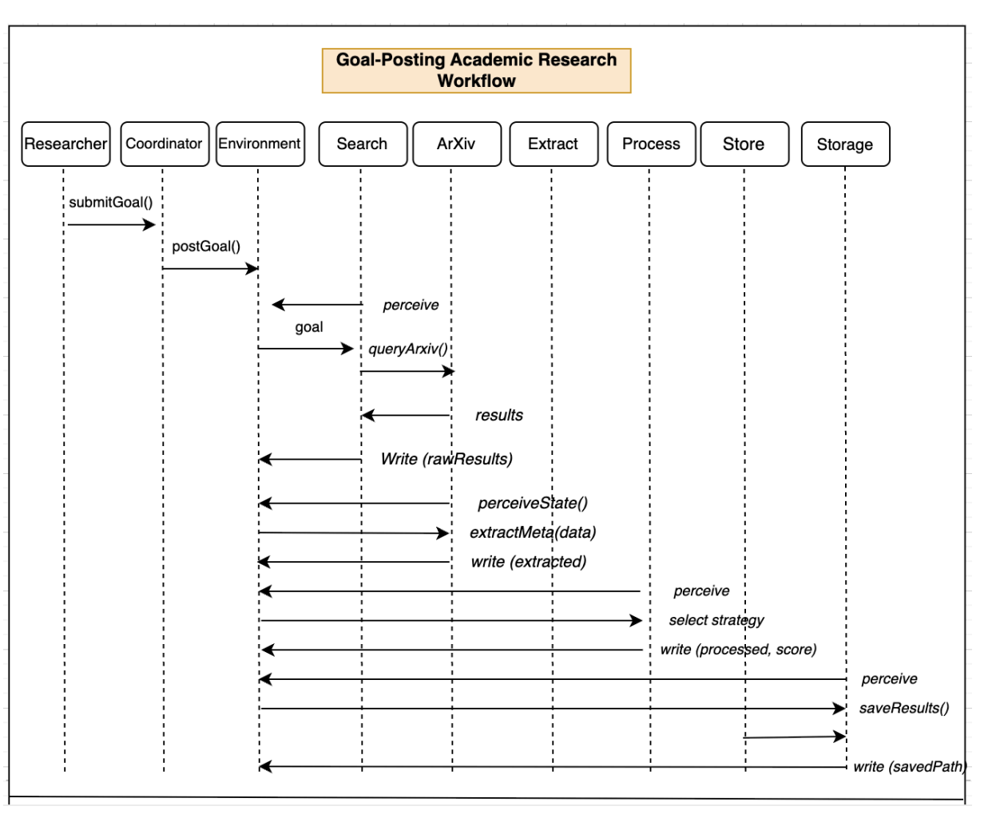
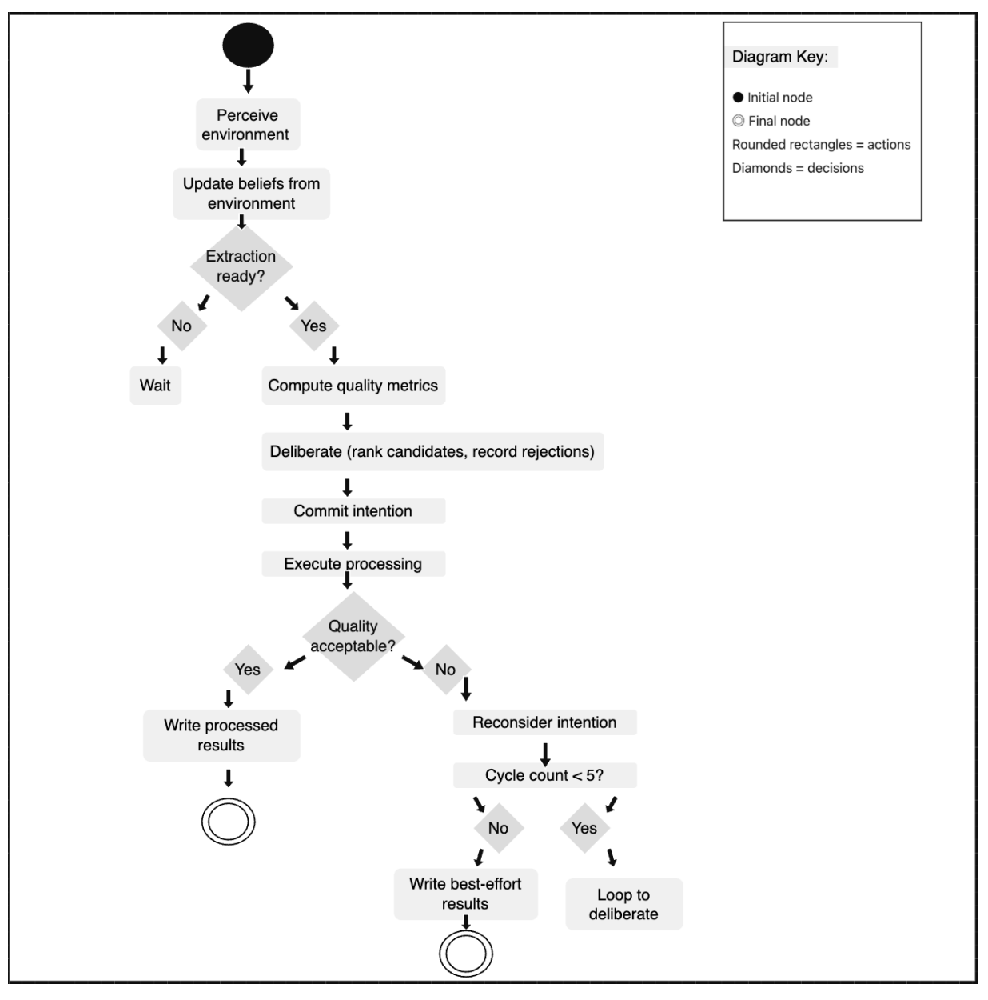
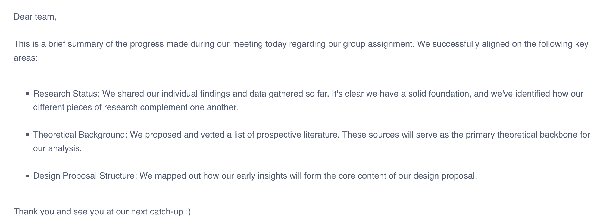
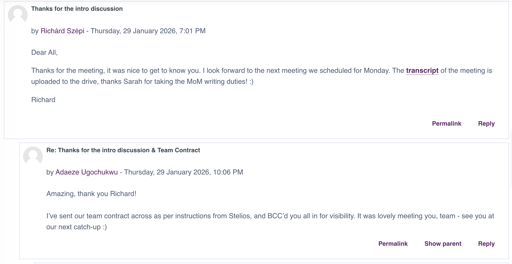
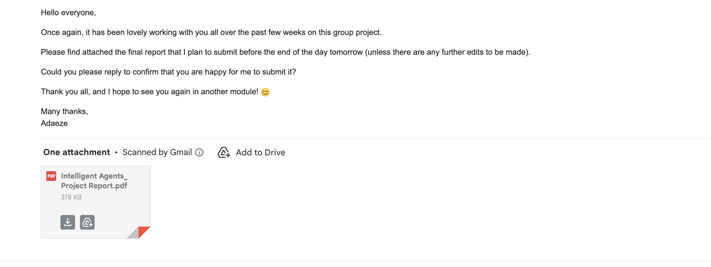
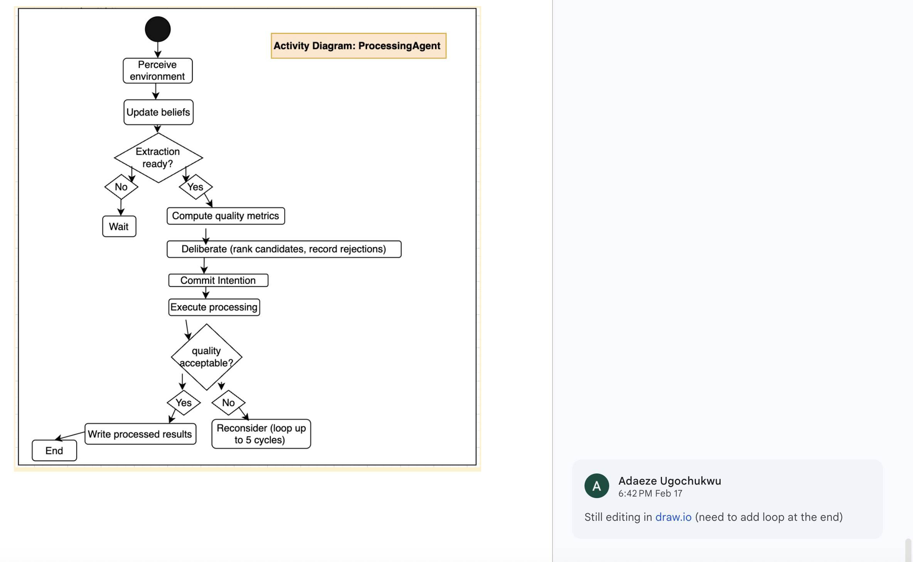
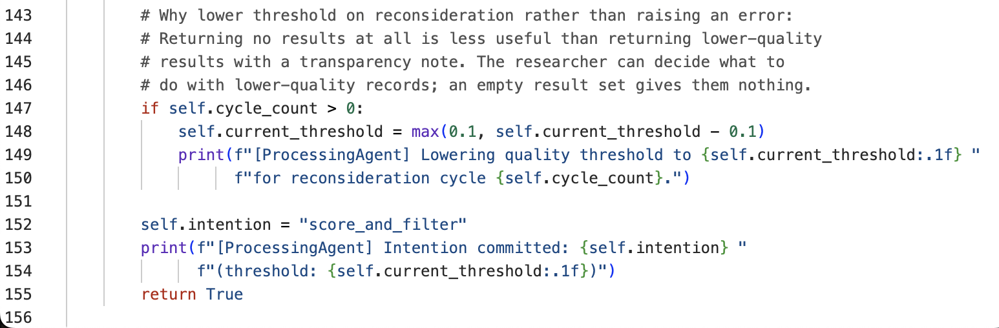
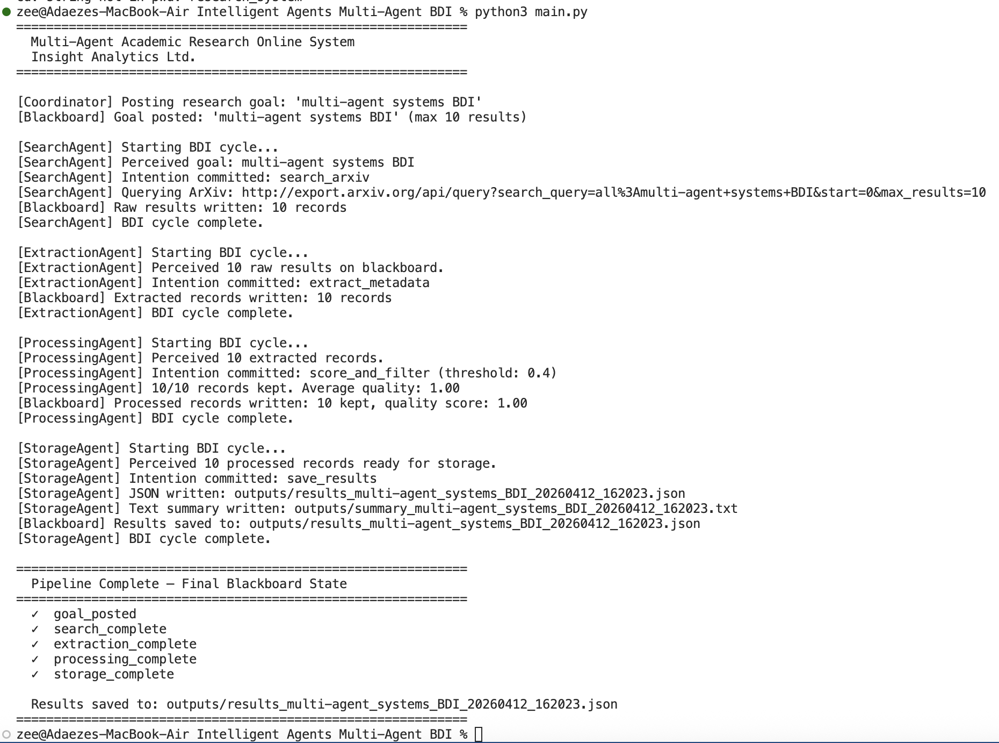
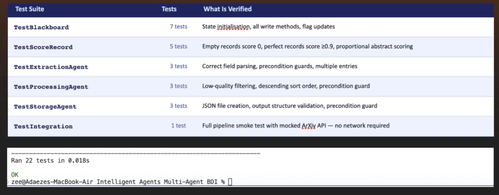

Team Project
As part of this module, I worked within a team of software consultants and specialists in agent design and development. The team was tasked with designing and proposing a multi-agent system for a fictional client organisation with domain-specific requirements. Our findings were presented in a formal report-style document.
Project Overview
Executive Summary
Insight Analytics Ltd requires an automated solution to identify, evaluate, and structure academic research to support internal knowledge development and client reporting, since manual literature review processes are time-intensive and difficult to scale. Our proposal outlines a blackboard-coordinated, Belief-Desire-Intention (BDI) multi-agent architecture. The system autonomously retrieves research data from the ArXiv API, evaluates the quality of the results, and generates structured JSON outputs for analysis and client reporting. The architecture prioritises modularity, scalability, and transparency of reasoning, ensuring operational efficiency and long-term maintainability.
My Individual Contributions
My contributions to the team project spanned coordination, research, and technical design. Specifically, I was responsible for:
- Sending the team contract to all members at the start of the project
- Supporting overall research into BDI agent architectures and multi-agent system design
- Designing and building the UML architecture diagrams, including the system component architecture, sequence diagram, and ProcessingAgent activity diagram
- Coordinating the final submission - circulating the completed report to all team members for sign-off before submitting on behalf of the group
System Design Diagrams
The following diagrams formed part of the team report and were produced as part of my individual contribution to the project.
Figure 1 - Component Architecture
The component architecture diagram illustrates the BDI multi-agent academic research system using blackboard coordination, showing how the Search, Extraction, Processing, and Storage agents interact through a shared environment.

Figure 2 - Goal-Posting Sequence Diagram
The sequence diagram maps out the goal-posting academic research workflow, tracing the full lifecycle of a research query from the researcher submitting a goal through to final storage of results.

Figure 3 - ProcessingAgent Activity Diagram
The activity diagram models the internal decision-making cycle of the ProcessingAgent, incorporating the BDI perceive-deliberate-act cycle, quality assessment, and a reconsideration loop of up to five cycles.

Team Meeting Notes
The following meeting notes were shared by Ioanna in the group forum following one of our team catch-ups. They summarise the key areas aligned during the meeting, including research status, theoretical background, and design proposal structure.

Team Discussion Evidence
The following screenshots evidence my participation in team discussions and collaborative activities throughout the project.
Team Forum - Intro Discussion and Team Contract
Following our first team meeting, I responded in the group forum to confirm that I had sent the team contract to all members as per the module instructions.

Final Submission - Report Circulated for Sign-off
Prior to submission, I circulated the completed report to all team members via email, attaching the final PDF and requesting confirmation before submitting on behalf of the group.

ProcessingAgent Diagram - Work in Progress
This screenshot shows an earlier version of the ProcessingAgent activity diagram being edited in draw.io, with a team message confirming I was still refining the loop logic at the end of the diagram.

Individual Technical Work
In addition to the group deliverables, I completed individual technical work on the system implementation, including writing and testing Python code for the multi-agent pipeline.
ProcessingAgent - Python Implementation
This screenshot shows the reconsideration logic within the ProcessingAgent, where the quality threshold is dynamically lowered across cycles rather than raising an error. The inline comments document the design rationale - returning lower-quality results with a transparency note is more useful to the researcher than returning nothing at all.

System Run - Terminal Output
This screenshot shows the full multi-agent pipeline running successfully, with all four BDI agents (SearchAgent, ExtractionAgent, ProcessingAgent, StorageAgent) completing their cycles. The system retrieved 10 records from the ArXiv API, achieved a perfect quality score of 1.00, and saved the structured JSON output.

Test Suite - 22 Tests Passing
The system was validated through a comprehensive test suite of 22 tests across 6 test suites, covering the Blackboard, all four agents, and a full integration test. All 22 tests passed in 0.018 seconds.

Tutor Feedback
Overall Grade: 76%
Knowledge and Understanding
The report demonstrates a strong understanding of intelligent agent architectures and the application of the Belief-Desire-Intention model within an academic research retrieval context. The theoretical foundations of agent systems are explained clearly and are appropriately connected to the proposed system design. The discussion of multi-agent coordination, reasoning cycles, and modular architecture reflects good comprehension of core intelligent agent principles, although further detail on implementation mechanisms and system behaviour during runtime would strengthen the technical depth.
Criticality
The report shows good evidence of critical reflection, particularly when discussing trade-offs between reactive and deliberative architectures and the limitations of rule-based approaches. The inclusion of challenges, limitations, and future work demonstrates awareness of practical design constraints and evolving agent research directions. However, the analysis could be further strengthened through deeper comparison with alternative agent architectures or approaches to intelligent information retrieval.
Use of Relevant Sources
The report demonstrates a strong use of relevant academic literature related to intelligent agents, multi-agent systems, and BDI architectures. Sources are integrated effectively to support theoretical explanations and design decisions, showing engagement with both foundational and contemporary work in the field. Greater synthesis of the literature to support critical argumentation would further improve the academic depth of the discussion.
Structure and Presentation
The report is clearly structured with well organised sections including theoretical background, system requirements, design decisions, challenges, and future work. The inclusion of architectural and interaction diagrams supports the explanation of the system design and improves overall readability. Minor improvements in formatting consistency and diagram labelling would enhance the overall professional presentation.
Academic Integrity
Academic conventions are followed consistently throughout the report, with appropriate citation of sources and a clearly structured reference list. The work demonstrates a strong attempt to maintain academic integrity and appropriate attribution of ideas. Minor improvements in formatting consistency and referencing style would further strengthen adherence to academic writing standards.
Peer Review
In addition to the team report, I completed an individual peer review form reflecting on team dynamics, collaboration processes, and my personal contributions throughout the project. This was submitted separately alongside the team report.